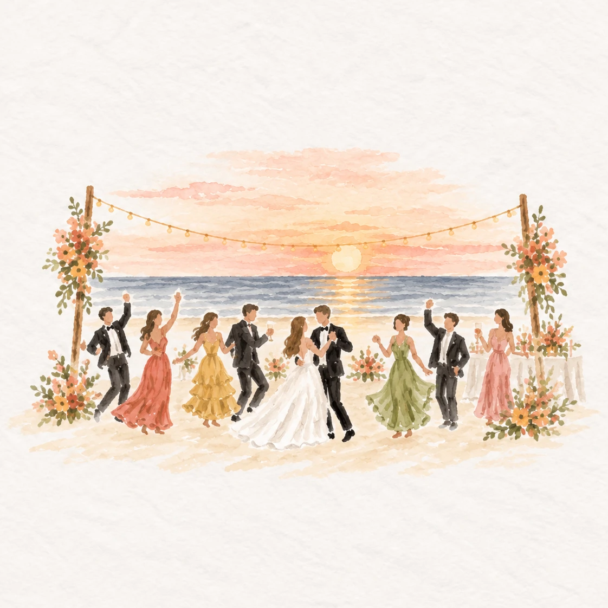

Ayla · wedding venue hotel
Hyatt Regency Aqaba Ayla Resort
Stay at the resort home to La Plage Beach Club, with lagoon and marina views, pools and a spa. A convenient option for keeping your wedding stay in one place.
View hotel & availabilityTogether by the sea
We’re getting married, and we’d love to celebrate with you.
30 April 2027 · Aqaba, Jordan

Counting down to our day
A sunset celebration
We hope you can join us
Please let us know whether you’ll be celebrating with us.
Include the names of everyone attending from your invitation.
Our celebration is for invited guests and approved plus-ones only. Please add a plus-one only if we have confirmed this with you.
Stay a little longer
Here are a few hotel options for your wedding trip, from the venue’s resort to other places to stay in Aqaba.
Ayla · wedding venue hotel
Stay at the resort home to La Plage Beach Club, with lagoon and marina views, pools and a spa. A convenient option for keeping your wedding stay in one place.
View hotel & availabilityBeachfront resort
A hotel in the heart of Aqaba with a private sandy beach, sea-view rooms, an infinity-edge pool and a spa.
View hotel & availabilityBeach resort
A resort on King Hussein Street with a private sandy beach, outdoor pools and a spa. An option for guests combining the wedding with some relaxation.
View hotel & availabilityHotel alternative
Another hotel option in Aqaba to compare with the beach resorts. Check its room options and rates for your travel dates.
View hotel & availabilityCheck availability for your dates. These links do not include a wedding discount or reserved room block.
Make a trip of it
If you’re joining us from abroad, why not stay a little longer? Here are a few places to explore before or after the wedding.
These are suggested visiting times, with travel between destinations added separately unless noted.
1 full day · 2 days for a slower visit
Walk through the Siq to the Treasury and explore the ancient city. Give yourself a full day; a second day leaves more time for longer trails and the Monastery.
A lovely trip to add before or after Aqaba. Start early and allow extra time for travel.
Explore Petra1 day + 1 night
Explore the desert on a guided jeep tour, enjoy the sunset and stay overnight in a desert camp for an evening under the stars.
Pair it with Petra for a memorable two- or three-day trip around the wedding.
Explore Wadi Rum1–2 extra days
Make time for the beach, snorkelling or a diving trip, then enjoy a relaxed evening in Aqaba.
An easy way to extend your stay without moving away from the wedding destination.
Explore Aqaba1 day · overnight for a relaxed stay
Spend a day floating in the salty water and unwinding at a resort. Stay overnight if you’d like a slower spa and pool day.
Best planned as a separate stop on your journey north, rather than a quick outing from Aqaba.
Explore The Dead Sea1–2 days
Explore the Citadel and Roman Theatre, wander downtown and make time for Jordanian food and cafés.
A good stop at the beginning or end of your trip if you’re travelling through Amman.
Explore AmmanHalf a day · a full day with travel
Discover the Roman ruins, column-lined streets and impressive ancient theatres. Allow a few hours to explore on foot.
Works well as a day trip while staying in Amman.
Explore JerashA short southern adventure: Allow 3–4 extra days around the wedding for a full day in Petra, a night in Wadi Rum and some beach time in Aqaba, including time to travel between stops.
Choose the pace that suits you, and keep the wedding day free to settle in and celebrate. Find more destination information at Visit Jordan.